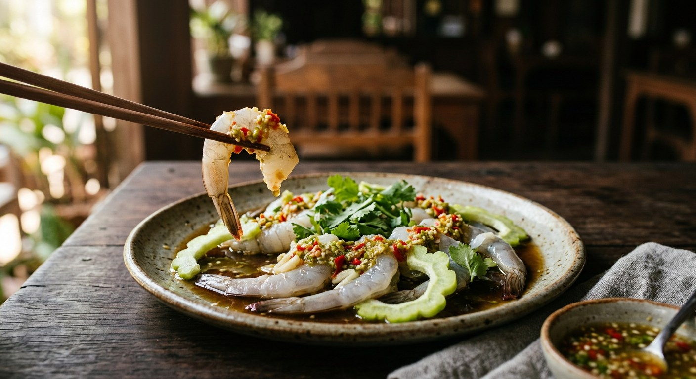

Raw prawns loosened in fish sauce and lime until the acid begins to cook them, a searing chilli-garlic dressing, bitter melon to cut it — Thailand's classic bar snack, no heat involved.

แช่น้ำปลา means soaked in fish sauce, and that is the entire cooking technique: at no point does this dish see heat. The salt of the fish sauce and the acid of the lime denature the surface of the raw meat — Matichon's food writer กฤช เหลือลมัย describes spooning the chilli-garlic-lime over the prawns and watching the grey flesh turn white-orange "in some places" as the lime reacts. Kapook files the dish under กับแกล้ม, drinking food — it is a bar and beer-garden classic, the kind of plate that appears between rounds.
The technique is small, but the schools are surprisingly far apart. Wongnai (with Kapook and a Wongnai home cook agreeing) starts by soaking the peeled prawns in ice-cold soda water — the bubbles firm the meat so it bites back — then gives them three minutes in fish sauce and lime. Aroifin skips the soda and chills the fish sauce itself before a fifteen-minute fridge soak, on the theory that cold fish sauce stops the salt from cooking the prawns too fast. And TrueID's แม่ซี goes furthest: the prawns are coated in tapioca starch and egg white, rinsed, and held in the freezer for five hours or more in a cooled marinade of fish sauce, coconut sugar and water.
Then there is Matichon's สูตรสามัญ — the plainest, sharpest version of all. No sugar, no soda, no freezer marinade. Read the label on your fish sauce (how much sugar, how much MSG), pick one you genuinely like, pour it over butterflied prawns with salt-squeezed bitter melon, five minutes in the freezer, then lime, garlic and chillies. His argument: the prawn's own natural sweetness should do the sweetening.
| Thai | English | Amount |
|---|---|---|
| กุ้งขาว | White prawns | 600 g |
| โซดา | Soda water, ice-cold | ½ cup |
| น้ำปลา | Fish sauce (for soaking) | 2 tbsp |
| น้ำมะนาว | Lime juice (for soaking) | 1 tbsp |
| น้ำปลา | Fish sauce (for the dip) | 2 tbsp |
| น้ำมะนาว | Lime juice (for the dip) | 2 tbsp |
| น้ำตาลทราย | Sugar | 1 tbsp |
| กระเทียม | Garlic | 20 cloves |
| พริกขี้หนู | Bird's eye chillies | 15 |
| รากผักชี | Coriander roots | 2 |
| กะหล่ำปลีซอย | Shredded cabbage, to serve | |
| มะระฝาน | Bitter melon, sliced, to serve | |
| ใบสะระแหน่ | Mint leaves, to garnish |
The lazy-plate version (Kapook, คุณแม่ปันปราย): 300 g large fresh prawns, 1 head of garlic, chillies to taste, 1 bottle of soda — soak the butterflied prawns two minutes, rinse, chill, then dress with pounded chilli-garlic, lime, salt, fish sauce and a little sugar, and lay sliced lemongrass and shredded sour mango over the top. The selling batch (TrueID, แม่ซี): 500 g prawns in 200 ml water with 50 g fish sauce and 50 g coconut sugar simmered and cooled, a 20 g-thick seafood dip of lime, pickled garlic juice, chillies, coriander root and garlic, plus a second sweet dip built from the marinade. The minimalist plate (Matichon): prawns, your favourite fish sauce, lime, garlic, green and red bird's eye chillies, Chinese bitter melon — and no sugar at all.
The soak. The biggest split in the sources. Wongnai and Kapook: 1–2 minutes in ice-cold soda, then minutes in fish sauce and lime. Aroifin: no soda, fifteen minutes in chilled fish sauce in the fridge. TrueID: tapioca starch and egg white, then five-plus hours in the freezer in a cooked marinade. Matichon: dress, five minutes in the freezer, eat.
Sugar or none. Wongnai, Kapook and the Wongnai home cook use a spoon of white sugar; Aroifin uses palm sugar; TrueID uses coconut sugar. Matichon uses none at all — his entire column is an argument that the prawn's natural sweetness should carry the dish.
Dip on the side or poured over. Wongnai serves the dip in a bowl alongside. Kapook, the Wongnai home cook and Matichon pour the dressing over the prawns so the acid works on the plate in front of you. TrueID does both: the seafood dip is poured, a second sweet dip sits beside it.
The sides. Bitter melon is nearly universal, but the type shifts — raw small bitter melon in the home cook's version, the larger Chinese มะระจีน in Aroifin and Matichon. Wongnai adds shredded cabbage; Kapook adds shredded sour mango and lemongrass laid over the prawns; TrueID reaches for pickled garlic.
The prawns. 500–600 g of white prawns for two or three people (Wongnai, TrueID, Aroifin); 300 g in Kapook; ten banana prawns in the home cook's plate. Matichon prefers small sea prawns, which stay crisp and sweet.
This recipe is translated from the following Thai-language sources. Where they disagree, we've said so.
1. Wongnai — "แจกสูตรฟรี 'กุ้งแช่น้ำปลา' กุ้งคู่น้ำจิ้มแซ่บ แถมเคล็ดลับกุ้งกรอบเด้ง!" (the recipe used here) — wongnai.com
2. Kapook — "กุ้งแช่น้ำปลา วิธีทำเมนูกับแกล้ม เปรี้ยวแซ่บ อร่อยเด็ดเข็ดฟัน" by คุณแม่ปันปราย (the soda soak, the poured dressing, sour mango and lemongrass) — cooking.kapook.com
3. Aroifin — "วิธีทำ กุ้งแช่น้ำปลา ไม่คาว เนื้อเด้ง น้ำจิ้มซีฟู้ดแซ่บซี๊ด" by mimi (the chilled fish sauce soak and the freshness tips) — aroifin.com
4. TrueID Food — "สูตรทำ กุ้งแช่น้ำปลา น้ำจิ้มซีฟู้ดรสเด็ด พร้อมบอกทริกการทำกุ้งสดให้เนื้อเด้งกรอบ!" by แม่ซี น้องมดดี้ (the freezer soak and the two dips) — food.trueid.net
5. Matichon Academy — "'กุ้งแช่น้ำปลา' แซ่บสุดคือสูตรสามัญ" by กฤช เหลือลมัย (the no-sugar minimalist plate and the fish-sauce argument) — matichonacademy.com
6. Wongnai UGC — "สูตร กุ้งแช่น้ำปลาซี๊ดซ๊าด" by Saw Ly Long Ka (the home cook's warning on over-soaking) — wongnai.com